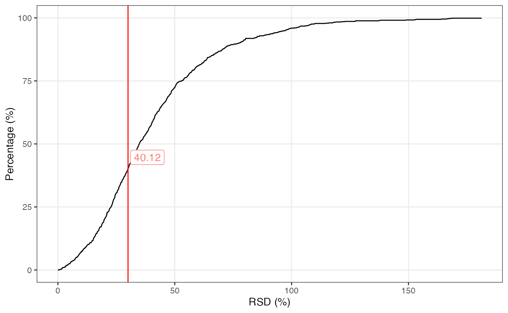

vignettes/massqc_rsd_plot.Rmd
massqc_rsd_plot.Rmd
library(massdataset)
library(tidyverse)
library(massqc)
data("sample_info", package = "massdataset")
data("expression_data", package = "massdataset")
data("variable_info", package = "massdataset")
object =
create_mass_dataset(
expression_data = expression_data,
sample_info = sample_info,
variable_info = variable_info
)
object
#> --------------------
#> massdataset version: 0.99.1
#> --------------------
#> 1.expression_data:[ 1000 x 8 data.frame]
#> 2.sample_info:[ 8 x 4 data.frame]
#> 3.variable_info:[ 1000 x 3 data.frame]
#> 4.sample_info_note:[ 4 x 2 data.frame]
#> 5.variable_info_note:[ 3 x 2 data.frame]
#> 6.ms2_data:[ 0 variables x 0 MS2 spectra]
#> --------------------
#> Processing information (extract_process_info())
#> create_mass_dataset ----------
#> Package Function.used Time
#> 1 massdataset create_mass_dataset() 2022-01-07 00:02:32
massqc_cumulative_rsd_plot(object = object, rsd_cutoff = 30, color = "black")
sessionInfo()
#> R version 4.1.0 (2021-05-18)
#> Platform: x86_64-apple-darwin17.0 (64-bit)
#> Running under: macOS Big Sur 10.16
#>
#> Matrix products: default
#> BLAS: /Library/Frameworks/R.framework/Versions/4.1/Resources/lib/libRblas.dylib
#> LAPACK: /Library/Frameworks/R.framework/Versions/4.1/Resources/lib/libRlapack.dylib
#>
#> locale:
#> [1] en_US.UTF-8/en_US.UTF-8/en_US.UTF-8/C/en_US.UTF-8/en_US.UTF-8
#>
#> attached base packages:
#> [1] stats graphics grDevices utils datasets methods base
#>
#> other attached packages:
#> [1] ggfortify_0.4.12 massqc_0.0.1 forcats_0.5.1 stringr_1.4.0
#> [5] dplyr_1.0.7 purrr_0.3.4 readr_2.0.0 tidyr_1.1.3
#> [9] tibble_3.1.3 ggplot2_3.3.5 tidyverse_1.3.1 magrittr_2.0.1
#> [13] tinytools_0.9.1 massdataset_0.99.1
#>
#> loaded via a namespace (and not attached):
#> [1] colorspace_2.0-2 rjson_0.2.20 ellipsis_0.3.2
#> [4] leaflet_2.0.4.1 rprojroot_2.0.2 circlize_0.4.14
#> [7] GlobalOptions_0.1.2 fs_1.5.0 clue_0.3-59
#> [10] rstudioapi_0.13 farver_2.1.0 ggrepel_0.9.1
#> [13] fansi_0.5.0 lubridate_1.7.10 xml2_1.3.2
#> [16] codetools_0.2-18 doParallel_1.0.16 cachem_1.0.5
#> [19] knitr_1.33 jsonlite_1.7.2 Cairo_1.5-12.2
#> [22] broom_0.7.9 cluster_2.1.2 dbplyr_2.1.1
#> [25] png_0.1-7 BiocManager_1.30.16 compiler_4.1.0
#> [28] httr_1.4.2 rvcheck_0.1.8 backports_1.2.1
#> [31] ggcorrplot_0.1.3 assertthat_0.2.1 fastmap_1.1.0
#> [34] lazyeval_0.2.2 cli_3.0.1 htmltools_0.5.2
#> [37] tools_4.1.0 gtable_0.3.0 glue_1.4.2
#> [40] Rcpp_1.0.7 Biobase_2.52.0 cellranger_1.1.0
#> [43] jquerylib_0.1.4 pkgdown_2.0.1 vctrs_0.3.8
#> [46] iterators_1.0.13 crosstalk_1.1.1 xfun_0.24
#> [49] openxlsx_4.2.4 rvest_1.0.1 lifecycle_1.0.0
#> [52] scales_1.1.1 ragg_1.1.3 clisymbols_1.2.0
#> [55] hms_1.1.0 parallel_4.1.0 RColorBrewer_1.1-2
#> [58] ComplexHeatmap_2.8.0 yaml_2.2.1 memoise_2.0.0
#> [61] pbapply_1.4-3 gridExtra_2.3 pander_0.6.4
#> [64] sass_0.4.0 stringi_1.7.3 highr_0.9
#> [67] S4Vectors_0.30.0 desc_1.3.0 foreach_1.5.1
#> [70] BiocGenerics_0.38.0 zip_2.2.0 shape_1.4.6
#> [73] rlang_0.4.11 pkgconfig_2.0.3 systemfonts_1.0.2
#> [76] matrixStats_0.60.0 evaluate_0.14 labeling_0.4.2
#> [79] patchwork_1.1.1 htmlwidgets_1.5.3 tidyselect_1.1.1
#> [82] ggsci_2.9 plyr_1.8.6 R6_2.5.0
#> [85] IRanges_2.26.0 generics_0.1.0 DBI_1.1.1
#> [88] pillar_1.6.2 haven_2.4.1 withr_2.4.2
#> [91] modelr_0.1.8 crayon_1.4.1 utf8_1.2.2
#> [94] plotly_4.9.4.1 tzdb_0.1.2 rmarkdown_2.9
#> [97] GetoptLong_1.0.5 grid_4.1.0 readxl_1.3.1
#> [100] data.table_1.14.0 reprex_2.0.0 digest_0.6.27
#> [103] gridGraphics_0.5-1 textshaping_0.3.6 stats4_4.1.0
#> [106] munsell_0.5.0 viridisLite_0.4.0 ggplotify_0.0.8
#> [109] bslib_0.3.1